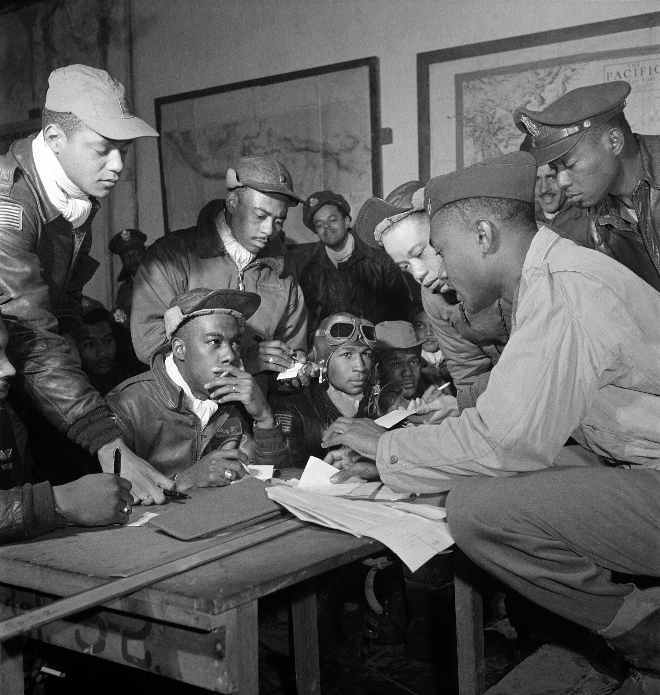
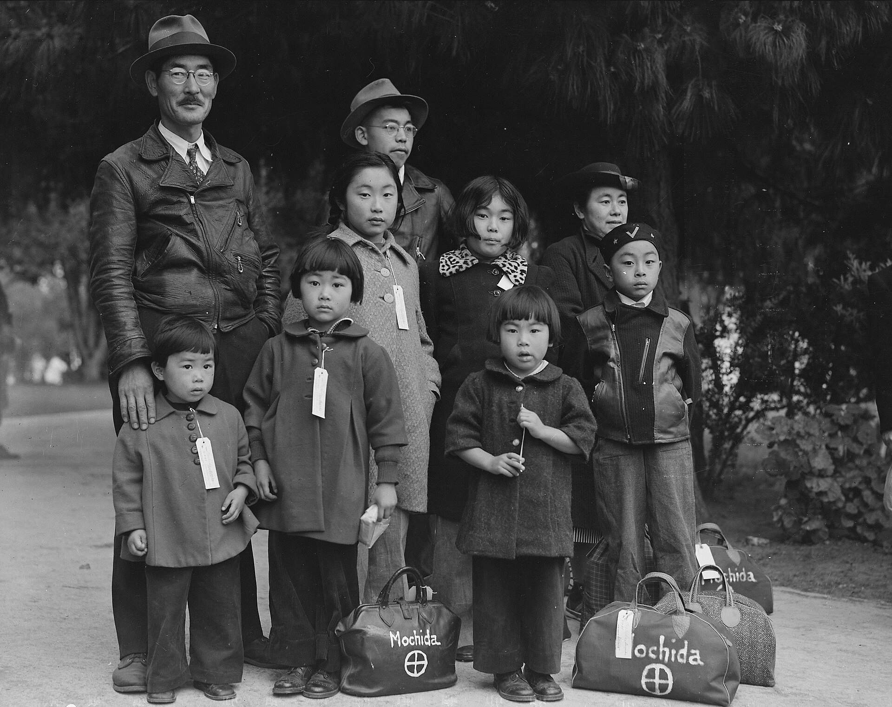

Directions: Work through the five stations in order. Each station holds one document or record from the war years. At each station, record who gained a claim on American democracy, who was denied one, and what reason the document or the government gave. At the end, rank the five stations by the size of the gap between the war's stated aims and the document's facts.
Source: Executive Order 8802, signed by President Franklin D. Roosevelt on June 25, 1941. Text quoted verbatim from the audited TPSP record executive-order-8802-1941; the edition named in that record is Franklin D. Roosevelt, "Executive Order 8802," June 25, 1941 (U.S. Equal Employment Opportunity Commission). Cuts are marked with ellipses.
"WHEREAS it is the policy of the United States to encourage full participation in the national defense program by all citizens of the United States, regardless of race, creed, color, or national origin, in the firm belief that the democratic way of life within the Nation can be defended successfully only with the help and support of all groups within its borders . . . I do hereby reaffirm the policy of the United States that there shall be no discrimination in the employment of workers in defense industries or government because of race, creed, color, or national origin . . ."
"There is established in the Office of Production Management a Committee on Fair Employment Practice . . . The Committee shall receive and investigate complaints of discrimination . . . and shall take appropriate steps to redress grievances which it finds to be valid."
Who gained a claim on American democracy in this document, and what exactly could they claim? Name the claim in the order's own terms.
What reason does the order itself give for the policy? Quote the phrase that carries the reason, and say whether the reason rests on fairness, on defense needs, or on both.
Source: Summary prepared for this lesson. This station is a summary of the Double V campaign, not a transcription of one editorial. The campaign was launched by the Pittsburgh Courier, a leading Black newspaper, in February 1942.
In late January 1942 a reader's letter reached the Pittsburgh Courier asking whether Black Americans should adopt a double V for a double victory, victory over enemies abroad and victory over enemies at home. On February 7, 1942 the paper took the question up as a campaign, printed a Double V emblem, and called on its readers to demand both victories at once. Other Black newspapers carried the campaign, and the emblem appeared in shop windows, on lapel pins, and in churches and barbershops across the country. The campaign's argument ran in one line. A country asking Black Americans to fight fascism abroad owed them the defeat of racism at home, in the same war and on the same terms, not at some later date.
Who gained a claim in this station, and who is the claim addressed to? State the claim in one sentence.
The campaign gives no government reason, because it is not a government document. What reason does the campaign itself give for why the claim should be honored during the war rather than after it?
Source: Summary prepared for this lesson from the service record of the Tuskegee Airmen. This station is a summary, not a transcription. The photograph shows airmen of the 332nd Fighter Group at Ramitelli, Italy. Photograph by Toni Frissell, March 1945, held by the Library of Congress, via Wikimedia Commons.

The Army trained its first Black pilots at Tuskegee, Alabama, in a segregated program. The 99th Pursuit Squadron, the first Black flying unit, reached North Africa in 1943 and flew its first combat missions that June over the Mediterranean. In 1944 the squadron joined the 332nd Fighter Group in Italy. Flying P-51 Mustangs marked with red tails, the 332nd escorted Fifteenth Air Force heavy bombers on long missions over southern and central Europe. Bomber crews asked for the group by its colors, and the record historians cite is a loss record: bombers escorted by the 332nd were lost to enemy fighters at a lower rate than bombers escorted by other groups in the same air force. The men who built that record served in a military that assigned most Black servicemen to labor and service units and kept every unit segregated.
Who gained a claim in this record, and what is the evidence for the claim? Use two facts from the station.
Who was denied a claim in the same record, and what reason had the military given for the policy that denied it? Answer from the station text and the reading.
Source: Executive Order 9066, signed by President Franklin D. Roosevelt on February 19, 1942. Text quoted verbatim from the audited TPSP record executive-order-9066; the edition named in that record is Franklin D. Roosevelt, "Executive Order 9066," 1942 (Federal Register, 7 FR 1407). Cuts are marked with ellipses. The photograph shows members of the Mochida family awaiting an evacuation bus at Hayward, California, in May 1942. Photograph by Dorothea Lange for the War Relocation Authority, National Archives record 537505.

". . . I hereby authorize and direct the Secretary of War, and the Military Commanders whom he may from time to time designate, whenever he or any designated Military Commander deems such action necessary or desirable, to prescribe military areas in such places and of such extent as he or the appropriate Military Commander may determine, from which any or all persons may be excluded, and with respect to which, the right of any person to enter, remain in, or leave shall be subject to whatever restrictions the Secretary of War or the appropriate Military Commander may impose in his discretion."
Who was denied a claim under this order as the Army applied it, and how many people did the denial reach? Give the figures from the reading.
What reason does the order itself state for the power it grants? Read the quoted passage closely and answer from its words, noting what the passage does and does not say.
Source: Korematsu v. United States, majority opinion by Justice Hugo Black, decided December 18, 1944. Text quoted verbatim from the audited TPSP record korematsu-majority-opinion-1944; the edition named in that record is Justice Hugo Black, "Korematsu v. United States, majority opinion," 1944 (U.S. Reports, 323 U.S. 214; Cornell LII). Cuts are marked with ellipses. The account of the dissent that follows the quotations is a summary prepared for this lesson, not a quotation.
"It should be noted, to begin with, that all legal restrictions which curtail the civil rights of a single racial group are immediately suspect. That is not to say that all such restrictions are unconstitutional. It is to say that courts must subject them to the most rigid scrutiny. Pressing public necessity may sometimes justify the existence of such restrictions; racial antagonism never can."
"We uphold the exclusion order as of the time it was made and when the petitioner violated it. . . . But hardships are part of war, and war is an aggregation of hardships. . . . Compulsory exclusion of large groups of citizens from their homes, except under circumstances of direst emergency and peril, is inconsistent with our basic governmental institutions. But when under conditions of modern warfare our shores are threatened by hostile forces, the power to protect must be commensurate with the threatened danger."
Summary of the dissents, prepared for this lesson: three justices dissented. Justice Murphy charged that the exclusion fell into racism and that the record held no military evidence that could support removing a whole ancestry group. Justice Jackson warned that a ruling of this kind stays in the law like a loaded weapon, ready for any authority that can present a plausible claim of urgent need.
Who was denied a claim in this decision, and what reason does the majority give in its own words? Quote the phrase that carries the reason.
The majority states a strict test and then upholds the exclusion. Explain in two sentences how both halves can stand in the same opinion, using the quotations.
Rank the five stations from the largest gap to the smallest gap between the war's stated aims and the document's facts. Write the station numbers in order, then defend your ranking in a paragraph. Your defense must name the aim, the fact, and the reason given at your first ranked and last ranked stations.
My ranking, largest gap first: ______ , ______ , ______ , ______ , ______
Defend the ranking.
Who gained a claim, and what could they claim? Workers barred from defense jobs by race, creed, color, or national origin gained a federal claim to employment in defense industries and government without discrimination, and a committee to receive and investigate their complaints and redress grievances it found valid. The claim ran in the order's own terms: full and equitable participation of all workers in defense industries.
What reason does the order give? Both reasons, stated together. The fairness reason is the policy sentence, that the democratic way of life can be defended successfully only with the help and support of all groups within the nation's borders. The defense reason is the detriment sentence in the order's preamble and the framing of the order as a prerequisite to the successful conduct of the national defense production effort. Credit requires one quoted phrase from the passage.
Who gained a claim, and to whom is it addressed? Black Americans claimed full citizenship during the war, and the claim is addressed to the federal government and to white America. In one sentence: a country asking Black Americans to fight fascism abroad owed them the defeat of racism at home.
What reason does the campaign give? Service and sacrifice in the present war create the obligation in the present war. The campaign refuses the sequence of service first and rights later, and its emblem and press campaign were built to hold the government to both victories at once.
Who gained a claim, on what evidence? The Black pilots and crews of the 99th Pursuit Squadron and the 332nd Fighter Group gained a claim to equal standing as combat servicemen. Evidence, any two: the 99th was the first Black flying unit and flew combat from June 1943; the 332nd escorted Fifteenth Air Force bombers from Italy in red tailed P-51 Mustangs; bomber crews requested the group; bombers under its escort were lost to enemy fighters at a lower rate than under other escort groups.
Who was denied, and on what stated reason? Black servicemen as a body were denied assignment by ability. The military kept its units segregated and assigned most Black servicemen to labor and service units, a policy defended at the time on claims about the performance and proper place of Black troops, claims the Tuskegee combat record answered in fact.
Who was denied, and how many did the denial reach? People of Japanese ancestry on the West Coast were denied the right to remain in their homes. About 120,000 people were removed, two thirds of them American citizens, to ten guarded camps in the interior.
What reason does the order state? None, in the quoted passage, and students should be led to see that plainly. The order grants power whenever a commander deems action necessary or desirable and leaves the restrictions to his discretion. It names no group, states no finding about espionage or sabotage, and sets no test the exclusion had to meet. The reason later offered, military necessity on the West Coast after Pearl Harbor, was supplied by the commanders who used the order, not by the order's text.
Who was denied, and what reason does the majority give? Fred Korematsu, and with him the people excluded under the order he violated, were denied the claim to remain in their homes. The majority's reason is pressing public necessity under conditions of modern warfare, in the phrase that the power to protect must be commensurate with the threatened danger.
How can the strict test and the ruling stand together? The opinion holds that restrictions on a single racial group are immediately suspect and demand the most rigid scrutiny, and then accepts the military's claim of necessity as satisfying that scrutiny at the time the order was made. The dissent summary gives students the counter reading: Murphy found no military evidence in the record that could support the removal, and Jackson warned the ruling would outlast the emergency as precedent.
Rankings may differ and earn full credit when defended from the documents. The most common defensible order places Station 5 or Station 4 first, because each joins a stated universal aim to a denial that reached citizens on ancestry alone, with Station 1 last, because the order narrowed the gap it addressed even though its enforcement was weak. A ranking that places Station 2 first must argue that a claim asserted and not granted is a wider gap than a right removed by law, and that argument can earn full credit if it names the aim, the fact, and the reason at both ends. Rankings that ignore the enforcement limit at Station 1, or that treat Station 4's silence about reasons as a stated reason, earn partial credit.